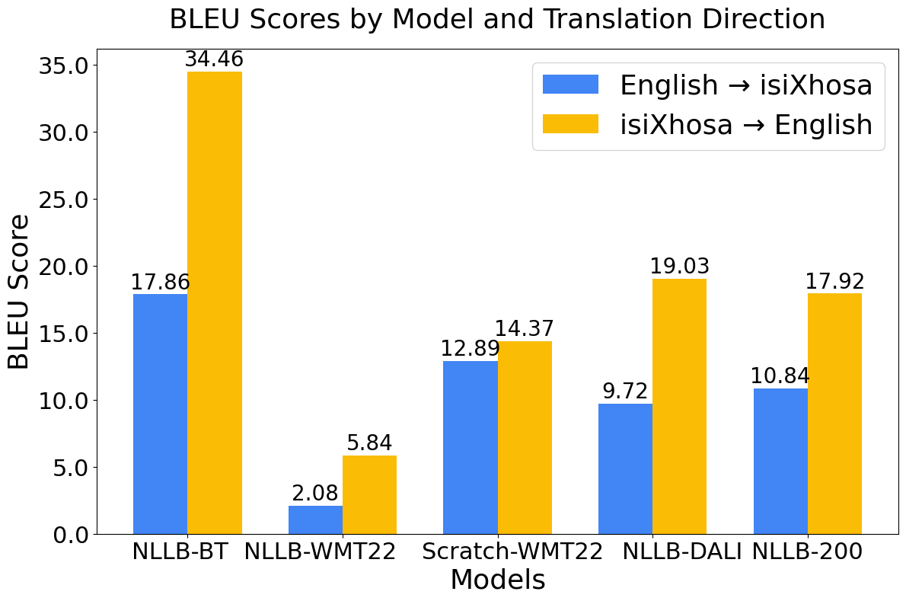

This project explores two synthetic data generation methods for English-isiXhosa medical translation, as well as various baselines.
IsiXhosa is South Africa's second-most spoken home language, yet many medical services operate primarily in English. This language barrier creates serious health risks through misdiagnoses and treatment errors. Machine translation (MT) could bridge this gap, but isiXhosa medical translation faces a critical obstacle: scarcity of parallel medical training data for isiXhosa. Synthetic data generation offers a potential solution to overcome this limitation.
To investigate whether synthetic data generation through back-translation and DALI improves medical English-isiXhosa translation quality. Compare training models from scratch versus fine-tuning existing multilingual models. Assess performance using standard MT metrics (BLEU, chrF and chrF++), and a health term error rate.
Our project explores and compares several methods for developing an English-isiXhosa medical machine translation model. Each approach is detailed on its own page.
The following graph shows the BLEU score results of all of our top performing models on the Blocker evaluation set. This is done to show how each approach compares to the others.
Generating synthetic data through back-translation has shown to be the most effective approach explored in this project to fine-tuning NLLB-200. This is shown in the results as it vastly outperforms the baselines as well as the best performing DALI models. While the models trained on DALI generated data had moderate performance gains when translation from isiXhosa→English the results were not significant enough to show DALI as effective for generating synthetic data for this purpose. This is likely due to the low quality of the lexicon used during word-for-word back-translation. The baseline model that was trained from scratch outperfomed the fine-tuned NLLB baseline model likely because the fine-tuned baseline was getting confused with certain words, lowering the translation quality.
{kind=link}